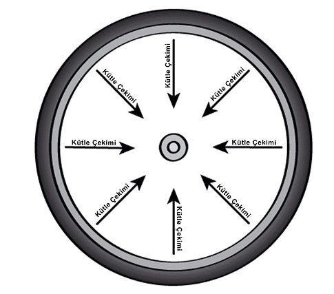
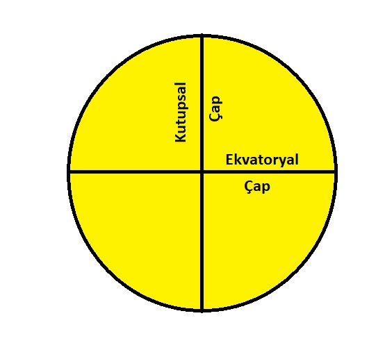

GEZEGENLER NEDEN YUVARLAKTIR?
Gezegenler, kütle çekiminden dolayı yuvarlaktır.Gezegenin kütle çekimi, her taraftan, her şeyi, eşit
bir şekilde kendi merkezine doğru çeker. Tıpkı bisiklet jantlarında tellerinin jantı merkeze doğru
çekerek düzgün tutması gibi. Yani kütle çekimi her tarafı eşit çekim uyguladığı için gezegenin
şeklini üç boyutlu bir küre haline getirir.
Büyük, Küçük Ama Hepsi Yuvarlak
Güneş Sistemi’nde birçok açıdan birbirinden farklı sekiz tane gezegen var.
Hepsi de farklı boyutlarda ve Güneş’e uzaklıkları birbirinden farklı. Bazıları küçük ve kayalardan,
bazıları ise büyük ve gazlardan oluşur. Fakat hepsi de yuvarlaktır.
Peki neden? Neden şekilleri küp, piramit ya da disk şeklinde değil?
Gezegenlerin oluşması için önce boşluktaki maddelerin birbiri ile çarpışması
ve yığılmaya başlaması gerekir. Bir süre sonra kütle çekimini oluşturacak miktarda madde birikir. Bu çekim, uzayda
maddeleri bir arada tutan kuvvettir. Gezegen yeterli
büyüklüğe ulaştığında, yıldızın çevresinde dolandığı yörüngesini temizlemeye başlar.Kütle çekimini
kullanarak uzaydan maddeleri toparlar.

Gezegelerin oluşması için önce boşluktaki maddelerin birbiri ile çarpışması ve yığılmaya başlaması
gerekir. Bir süre sonra kütle çekimini oluşturacak miktarda madde birikir. Bu çekim, uzayda
maddeleri bir arada tutan kuvvettir. Gezegen yeterli büyüklüğe ulaştığında, yıldızın çevresinde
dolandığı yörüngesini temizlemeye başlar. Kütle çekimini kullanarak uzaydan maddeleri toparlar.
Peki Neden Hepsi Mükemmel Bir Küre?
Güneş sistemimizdeki bazı gezegenler diğer gezegenlere kıyasla daha yuvarlaktır. Merkür ve
Venüs en yuvarlak şekle sahiptir. Bu gezegenler neredeyse mükemmel bir küre şeklindedirler, tıpkı bir bilye gibi.
Fakat bazı gezegenler o kadar da mükemmel bir küre şekline sahip değildir. Satürn ve Jüpiter merkez kısımlarında biraz daha kalındır
çünkü kendi etraflarında daha hızlı dönerler. Bu da bu gezegenlerin ekvator çevresinde bir
şişkinlik oluşturur. Peki bu neden oluyor? Bir cisim kendi etrafında döndüğünde, tıpkı gezegenlerin döndüğü gibi, dış kenarları iç tarafına yetişmek
için daha hızlı döner. Bu, bir tekerlek, DVD veya fan gibi dönen her cisim
için geçerlidir. Cisimlerin dış kenarları daha uzağa ve daha hızlı hareket etmek zorundadırlar.

Bir gezegenin ekvatoru boyunca, kuzey ve güney kutuplarının tam ortası, kütle çekimi ile
kenarlarını içeriye doğru çeker ve gezegeni bir arada tutar. Gezegenler döndükçe cisimler bir
lastikteki çamur gibi dışa doğru fırlamak ister. Satürn ve Jüpiter hızlı döner. Bu dönüş sırasında
ekvator bölgesi diğer bölgelere yetişmek için daha hızlı döner bu da ekvator kısmında şişkinlik oluşturur.
Biz buna fazladan genişlemiş ekvatoryal şişkinlik diyoruz.
Satürn’ün şişkinliği Güneş Sistemindeki birçok gezegenden daha fazladır. Eğer kutuptan kutba olan çapı ve
ekvator çapını karşılaştırırsak aynı sonuç çıkmaz. Satürn %10,7 merkezden daha kalındır. Jüpiter ise %6,9 daha
kalındır.
Bilye gibi mükemmel bir yuvarlaklığa sahip olmak yerine, üzerine bastırılmış bir basketbol topu şekline
sahiptirler.
Peki Diğer Gezegenler? Dünya ve Mars diğer gaz devlerine oranla daha küçüklerdir ve onlar kadar kendi etraflarında hızlı dönmezler. Bu
gezegenlerde mükemmel küre şekline sahip olmasalar da Satürn ve Jüpiter’e göre daha yuvarlaklardır. Dünya
merkezde %0.3, Mars ise %0,6 daha kalındır. Merkezde %1 bile kalın olmadıkları için rahatça yuvarlaklardır
diyebiliriz. Uranüs ve Neptün ise iki değerin arasındadır. Uranüs %2,3, Neptün ise %1,7 merkezden daha
kalındır. Tam olarak mükemmel yuvarlak değillerdir fakat oldukça yakınlardır.
Kaynak: NASA